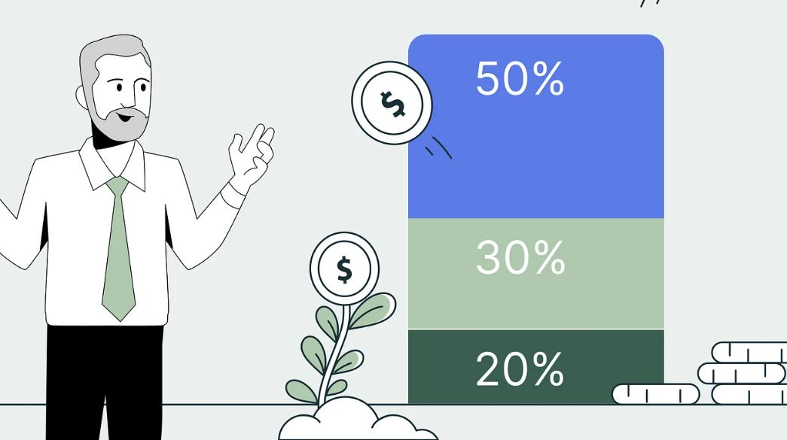

Guia Prático de Educação Financeira: Do Endividamento à Construção de Patrimônio
A organização financeira não depende de quanto você ganha, mas sim de como você gerencia o dinheiro que passa pelas suas mãos. Ter clareza sobre os seus números é o primeiro passo para transformar o estresse financeiro em tranquilidade e liberdade de escolha.

1. A Regra 50/30/20: Como Organizar o seu Orçamento
Se você acha difícil controlar cada centavo que gasta, a Regra 50/30/20 é uma das metodologias mais eficientes e simples para dividir a sua renda líquida (o valor que cai de fato na sua conta após os descontos).
O método categoriza todas as suas despesas mensais em três grandes blocos:
- 50% para Necessidades (O Essencial):
- São os gastos dos quais você não pode abrir mão para manter sua vida funcionando.
- Exemplos: Aluguel ou financiamento da casa, contas de água, luz, internet, supermercado, transporte (combustível ou passagem), plano de saúde e medicamentos básicos.
- Alerta: Se os seus gastos essenciais ultrapassam 50%, o seu padrão de vida está acima da sua realidade atual, exigindo ajustes urgentes.
- 30% para Desejos (O Estilo de Vida):
- São os gastos que trazem conforto, lazer e bem-estar, mas que não são obrigatórios para a sua sobrevivência imediata.
- Exemplos: Jantar fora, idas ao cinema, assinaturas de streaming (Netflix, Spotify), viagens, roupas novas e hobbies.
- Flexibilidade: Em momentos de aperto (ou foco em quitar dívidas), esta é a primeira categoria que deve ser reduzida temporariamente.
- 20% para Objetivos Financeiros (O Futuro):
- O dinheiro que trabalha para você. Esta fatia deve ser rigorosamente "paga a si mesmo" assim que o salário cair.
- Exemplos: Construção da reserva de emergência, quitação de dívidas atrasadas, investimentos para o longo prazo e aposentadoria.
2. A Reserva de Emergência: O Seu Para-Quedas Financeiro
A Reserva de Emergência é o alicerce de qualquer vida financeira saudável. Sem ela, qualquer imprevisto — como uma despesa médica, um problema no carro ou a perda repentina de renda — pode forçá-lo a recorrer a empréstimos com juros abusivos e gerar um efeito bola de neve.
- Para que serve? Para cobrir imprevistos de força maior, garantindo que você consiga manter seu padrão de vida essencial durante crises.
- De quanto deve ser? O ideal é acumular o equivalente a 6 meses dos seus custos mensais essenciais. (Se o seu custo de vida básico é de R$ 3.000 por mês, sua reserva deve ser de R$ 18.000). Se você é autônomo ou tem renda variável, o recomendado sobe para 9 a 12 meses.
- Onde guardar? O dinheiro da reserva precisa estar em um lugar seguro, com liquidez diária (você deve poder resgatar a qualquer momento) e que renda ao menos 100% do CDI.
- Opções comuns: Tesouro Selic, contas digitais que rendem automaticamente 100% do CDI com liquidez imediata, ou CDBs de grandes bancos com liquidez diária.
3. Como Sair das Dívidas: Passo a Passo Prático
Estar endividado drena a energia mental e compromete o futuro. Para sair dessa situação, a emoção deve dar lugar à estratégia. Siga este plano de ação:
Passo 1: O Raio-X Completo (Diagnóstico)
- Liste absolutamente todas as suas dívidas em um papel ou planilha: nome do credor, valor original, valor atualizado com juros e a taxa de juros cobrada.
- Enfrente os números de frente. Você precisa saber exatamente quanto deve e para quem deve.
Passo 2: Corte os Vazamentos e Negocie o Orçamento
- Durante o período de reestruturação, suspenda todos os gastos supérfluos (os 30% de desejos).
- Enxugue ao máximo as despesas essenciais (troque marcas no supermercado, cancele tarifas bancárias desnecessárias) para sobrar o máximo possível de dinheiro para o próximo passo.
Passo 3: Faça uma Limpa no Crédito (Ataque aos Juros)
- Dívidas caras (Cartão de crédito e Cheque especial): Estas são as prioridades absolutas, pois possuem os juros mais altos do mercado. Entre em contato com os bancos para renegociar ou busque portabilidade de crédito para instituições com taxas menores.
- Feirões de Negociação: Utilize plataformas oficiais (como o Desenrola Brasil ou o Serasa Limpa Nome) para conseguir descontos agressivos que chegam a 90% do valor dos juros e multas para pagamento à vista ou parcelamentos que caibam no seu orçamento.
Passo 4: Priorize o Método Bola de Neve ou Avalanche
- Método da Avalanche: Você foca em quitar primeiro a dívida com maior taxa de juros, independentemente do valor. É o método matematicamente mais barato, pois economiza mais dinheiro a longo prazo.
- Método da Bola de Neve: Você foca em quitar primeiro a dívida com o menor valor total. Conforme elimina as menores rapidamente, você ganha motivação psicológica (as pequenas "vitórias") para encarar as maiores. (Escolha o que funcionar melhor para a sua disciplina mental).
Passo 5: Mude a Rota Definitivamente
- Assim que as dívidas forem quitadas, redirecione o valor que ia para as parcelas diretamente para a criação da sua Reserva de Emergência. Assim, você quebra o ciclo vicioso do endividamento e passa a construir riqueza.